load(file = "Data/researchquestion/cchsc1.RData")
load(file = "Data/researchquestion/cchsc2.RData")
load(file = "Data/researchquestion/cchsc3.RData")
ls() # see list of objects available
#> [1] "c1" "c2" "c3" "use.saved.chche"
dim(c1) # Dimensions of CCHS 1.1
#> [1] 130880 117
dim(c2) # Dimensions of CCHS 2.1
#> [1] 134072 112
dim(c3) # Dimensions of CCHS 3.1
#> [1] 132221 112Causal question-1
Working with a Predictive question using CCHS
Load data
We download and process the data in the same was as shown earlier, and reuse the data for the following tutorial.
Aim
Rheumatic diseases may cause acute or chronic inflammation. Such systemic inflammation could increase the risk of cardiovascular diseases (CVD). However, Osteoarthritis (OA) is not so well explored in association with CVD. The aim of the current study is to examine the association between OA and CVD among Canadian adults.
Example article
We are going to use the article by Rahman et al. (2013) as our reference. DOI:10.1136/bmjopen-2013-002624.
We will revisit this question and data again in the survey data chapter.
PICOT
Target population: Canadian adults
Outcome (\(Y\)): CVD (Heart disease)
Exposure group (\(A\)): OA
Control group: People without OA
Time line: From 2001 - 2005
-
From the literature, we have identified some factors to be useful in exploring this \(A-Y\) relationship:
- age, - sex, - income, - ethnicity, - obesity, - exercise, - smoking, - diets (Proxied by fruit and vegetable consumption), - pain medication use, - hypertension, - cholesterol (Proxied by Diabetes and Chronic obstructive pulmonary disease /COPD), - Additionally we have considered education level.
Why this time frame?
In CCHS cycle 1.1-3.1, there was a question ‘What type of arthritis?’ - which resulted in responses such as
- Rheumatoid arthritis,
- OA,
- other,
- unknown.
This question was crucial in identifying OA patients. However, in later years, that question was omitted. Hence, for this practical reason, we restricted out analysis in CCHS cycle 1.1-3.1 (2001-2005).
Creating Analytic Data
Identify Relevant factors
From the literature, we identify variables that are associated with either the outcome and/or the exposure. We have to be cautious about the variables that are only related to exposures only (a topic for later).
Generally try to include basic demographics (e.g., age, sex, education etc. are the usual suspects) at this stage even if we do not have a strong indication from the literature that those variables are highly associated with the outcome or the exposure.
| Variable name | Variable | Type | Categories |
|---|---|---|---|
| OA | Exposure | Binary | |
| CVD | Outcome | Binary | |
| Age | Covariate | Category | 20-39; 40-49; 50-59; 60-64 |
| Sex | Covariate | Binary | Men; Women |
| Income | Covariate | Category | <30k; 30k-49k; 50k-79k; 80k+ |
| Cultural/racial origin | Covariate | Binary | White; Visible minority |
| BMI | Covariate | Category | Underweight; Normal; Overweight; Obese |
| Physical activity | Covariate | Category | Active; Moderate; Inactive |
| Smoking | Covariate | Category | Non-smoker; Currently; Former |
| Fruit/vegetable consumption | Covariate | Category | 0-3; 4-6 ; 6+ servings daily |
| Pain medication use | Covariate | Binary | |
| Hypertension | Covariate | Binary | |
| COPD | Covariate | Binary | |
| Diabetes | Covariate | Binary | |
| Education | Covariate | Category | <Secondary; Secondary graduate; PostSecondary+; PostSecondary grad |
| Weight | Sampling weights | Continuous |
Variables under consideration
Find out whether we have the variables collected / measured / asked in the surveys. If not asked, try to find out whether there is a proxy variable that was collected / measured / asked in the surveys.
For example, we did not have a question / variable related to a particular topic (e.g., say, cholesterol, which is known to be associated with our outcome), try to collect some variables that could be used as proxies (e.g., COPD, Diabetes).
Note that the variable names are generally different in different cycles.
| Variable name | CCHS 1.1 | CCHS 2.1 | CCHS 3.1 |
|---|---|---|---|
| Arthritis | CCCA_051 | CCCC_051 | CCCE_051 |
| Kind of arthritis (for OA) | CCCA_05A | CCCC_05A | CCCE_05A |
| Heart disease (CVD) | CCCA_121 | CCCC_121 | CCCE_121 |
| Age | DHHAGAGE | DHHCGAGE | DHHEGAGE |
| Sex | DHHA_SEX | DHHC_SEX | DHHE_SEX |
| Household income | INCAGHH | INCCGHH | INCEGHH |
| Cultural/racial origin | SDCAGRAC | SDCCGRAC | SDCEGCGT |
| BMI (Score) | HWTAGBMI | HWTCGBMI | HWTEGBMI |
| BMI (Category) | HWTAGSW | HWTCGISW | HWTEGISW |
| Physical activity | PACADPAI | PACCDPAI | PACEDPAI |
| Smoking status (Type of smoker) | SMKADSTY | SMKCDSTY | SMKEDSTY |
| Fruits/vegetables consumption | FVCADTOT | FVCCDTOT | FVCEDTOT |
| Pain med use | DRGA_1A | MEDC_1A | MEDE_1A |
| Hypertension | CCCA_071 | CCCC_071 | CCCE_071 |
| Has emphysema or COPD | CCCA_91B | CCCC_91B | CCCE_91F |
| Diabetes | CCCA_101 | CCCC_101 | CCCE_101 |
| Education | EDUADR04 | EDUCDR04 | EDUEDR04 |
| Survey weights | WTSAM | WTSC_M | WTSE_M |
Subset the data
# Restrict the dataset with variables of interest only
var.names1 <- c("CCCA_051", "CCCA_05A", "CCCA_121", "DHHAGAGE",
"DHHA_SEX", "INCAGHH", "SDCAGRAC", "HWTAGBMI",
"HWTAGSW", "PACADPAI", "SMKADSTY", "FVCADTOT",
"DRGA_1A", "CCCA_071", "CCCA_91B", "CCCA_101",
"EDUADR04", "WTSAM")
cc11 <- c1[var.names1]
dim(cc11)
#> [1] 130880 18
table(cc11$CCCA_051)
#>
#> YES NO NOT APPLICABLE DON'T KNOW REFUSAL
#> 24511 106231 0 110 3
#> NOT STATED
#> 25
var.names2 <- c("CCCC_051", "CCCC_05A", "CCCC_121", "DHHCGAGE",
"DHHC_SEX", "INCCGHH", "SDCCGRAC", "HWTCGBMI",
"HWTCGISW", "PACCDPAI", "SMKCDSTY", "FVCCDTOT",
"MEDC_1A", "CCCC_071", "CCCC_91B", "CCCC_101",
"EDUCDR04", "WTSC_M")
cc21 <- c2[var.names2]
dim(cc21)
#> [1] 134072 18
table(cc21$CCCC_051)
#>
#> YES NO NOT APPLICABLE DON'T KNOW REFUSAL
#> 29293 104530 0 208 11
#> NOT STATED
#> 30
var.names3 <- c("CCCE_051", "CCCE_05A", "CCCE_121", "DHHEGAGE",
"DHHE_SEX", "INCEGHH", "SDCEGCGT", "HWTEGBMI",
"HWTEGISW", "PACEDPAI", "SMKEDSTY", "FVCEDTOT",
"MEDE_1A", "CCCE_071", "CCCE_91F", "CCCE_101",
"EDUEDR04", "WTSE_M")
cc31 <- c3[var.names3]
dim(cc31)
#> [1] 132221 18
table(cc31$CCCE_051)
#>
#> YES NO NOT APPLICABLE DON'T KNOW REFUSAL
#> 28221 103781 0 191 4
#> NOT STATED
#> 24Combine 3 cycle datasets
We want to combine data from three different cycles in order to get more subjects in our data. For that, we will have to stack/append data from three different cycles. In order to do so, we need to make the names exarctly the same. E.g., for BMI category, we will rename all 3 variables: HWTAGSW (from cycle 1), HWTCGISW (from cycle 2) and HWTEGISW (from cycle 3) to bmicat.
Making variable names the same
new.var.names <- c("arthritis", "arthritis.kind", "CVD", "age",
"sex", "income", "race", "bmi",
"bmicat", "phyact", "smoke", "fruit",
"painmed", "ht", "copd", "diab",
"edu", "weight")
names(cc11) <- names(cc21) <- names(cc31) <- new.var.names
table(cc11$arthritis)
#>
#> YES NO NOT APPLICABLE DON'T KNOW REFUSAL
#> 24511 106231 0 110 3
#> NOT STATED
#> 25
table(cc21$arthritis)
#>
#> YES NO NOT APPLICABLE DON'T KNOW REFUSAL
#> 29293 104530 0 208 11
#> NOT STATED
#> 30
table(cc31$arthritis)
#>
#> YES NO NOT APPLICABLE DON'T KNOW REFUSAL
#> 28221 103781 0 191 4
#> NOT STATED
#> 24Notice the difference in categorization
Note that, not only the names of the variables are different, sometimes, the categorization labels are also different. Note the BMI (Category) in the three cycles: HWTAGSW from cycle 1:
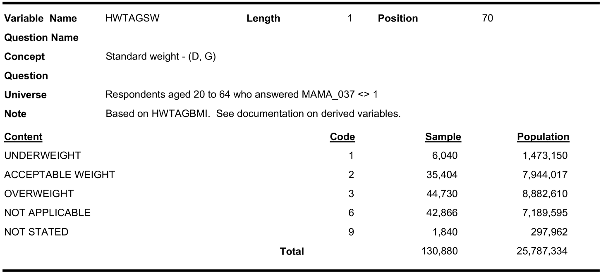
HWTCGISW from cycle 2:
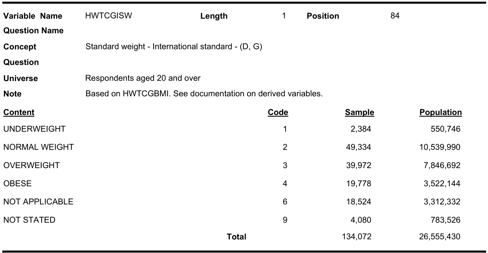
HWTEGISW from cycle 3:
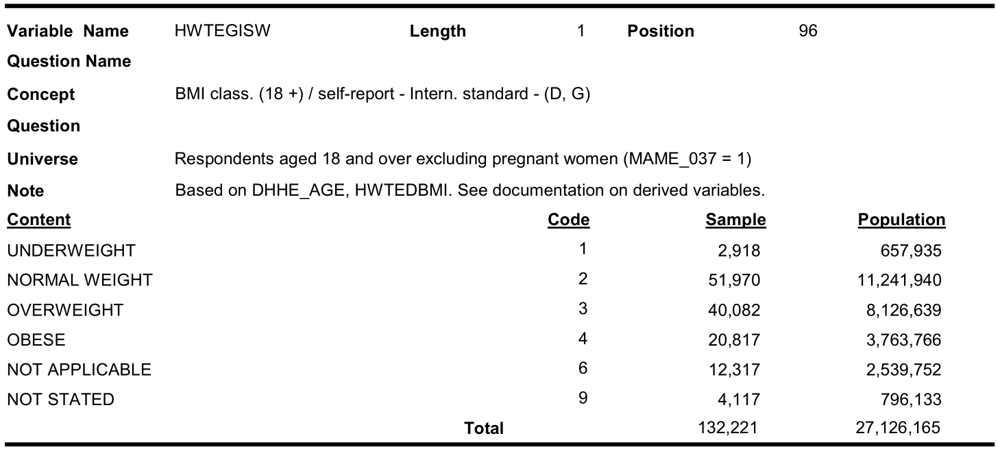
table(cc11$bmicat)
#>
#> UNDERWEIGHT ACCEPT. WEIGHT OVERWEIGHT NOT APPLICABLE NOT STATED
#> 6040 35404 44730 42866 1840
table(cc21$bmicat)
#>
#> UNDERWEIGHT NORMAL WEIGHT OVERWEIGHT OBESE NOT APPLICABLE
#> 2384 49334 39972 19778 18524
#> DON'T KNOW REFUSAL NOT STATED
#> 0 0 4080
table(cc31$bmicat)
#>
#> UNDERWEIGHT NORMAL WEIGHT OVERWEIGHT OBESE NOT APPLICABLE
#> 2918 51970 40082 20817 12317
#> DON'T KNOW REFUSAL NOT STATED
#> 0 0 4117In cycle 1.1, the second response (code 2) label was named as “Acceptable weight” where as in cycles 2.1 and 3.1 it was named as “Normal weight”. Also “obese” category was not present in cycle 1.1.
Similarly look for age categories:
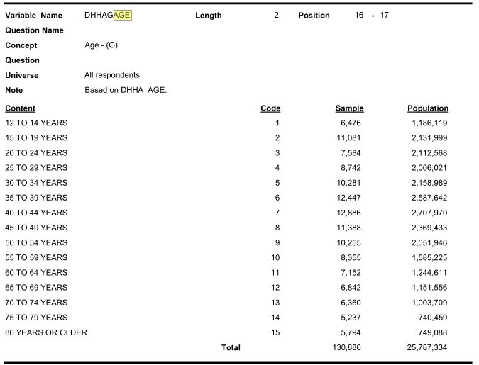
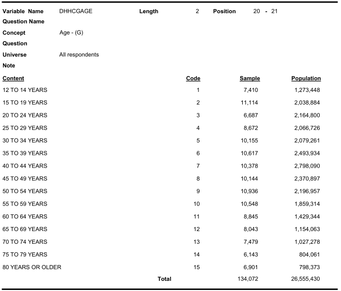
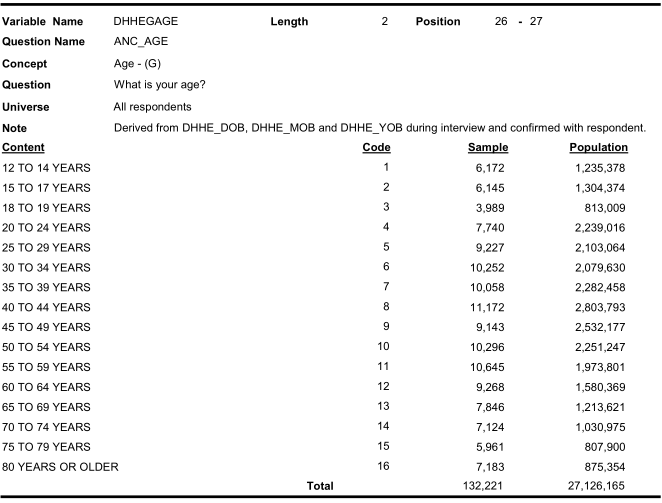
Similarly look for income categories:

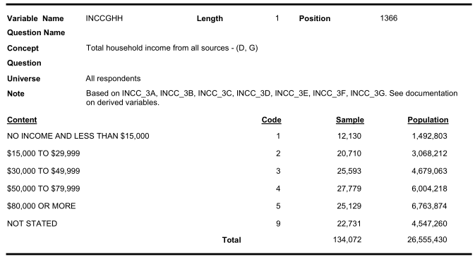
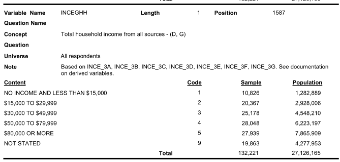
Therefore, we need to recode the variable value labels carefully.
Appending
Below we append all the three cycles of data:
Subsetting according to eligibility criteria
Criteria 1: control group
Exposure group is people with osteoarthritis. The control group is people who do not have osteoarthritis.
In cycle 1, there were 2 related questions: - Do you have arthritis or rheumatism excluding fibromyalgia? (variable arthritis) - What kind of arthritis do you have? (variable arthritis.kind)
table(cc123a$arthritis)
#>
#> YES NO NOT APPLICABLE DON'T KNOW REFUSAL
#> 82025 314542 0 509 18
#> NOT STATED
#> 79
table(cc123a$arthritis.kind)
#>
#> RHEUMATOID ARTH OSTEOARTHRITIS OTHER NOT APPLICABLE DON'T KNOW
#> 19099 40943 7305 314542 12354
#> REFUSAL NOT STATED RHEUMATISM
#> 215 619 2096
dim(cc123a)
#> [1] 397173 18In the control group, we do not want to put people with other types of arthritis.
c123sub1 <- subset(cc123a, arthritis.kind == "OSTEOARTHRITIS" |
arthritis.kind == "NOT APPLICABLE" )
dim(c123sub1)
#> [1] 355485 18
table(c123sub1$arthritis.kind)
#>
#> RHEUMATOID ARTH OSTEOARTHRITIS OTHER NOT APPLICABLE DON'T KNOW
#> 0 40943 0 314542 0
#> REFUSAL NOT STATED RHEUMATISM
#> 0 0 0
table(c123sub1$arthritis)
#>
#> YES NO NOT APPLICABLE DON'T KNOW REFUSAL
#> 40943 314542 0 0 0
#> NOT STATED
#> 0
require(car)
c123sub1$arthritis.kind <- recode(c123sub1$arthritis.kind,
"'OSTEOARTHRITIS'='OA';
'NOT APPLICABLE'='Control';
else=NA",
as.factor = FALSE)
table(c123sub1$arthritis.kind, useNA = "always")
#>
#> Control OA <NA>
#> 314542 40943 0
c123sub1$OA <- c123sub1$arthritis.kind
c123sub1$arthritis.kind <- NULL
c123sub1$arthritis <- NULLCriteria 2: retain valid responses for outcome
table(c123sub1$CVD)
#>
#> YES NO NOT APPLICABLE DON'T KNOW REFUSAL
#> 19177 336021 0 252 35
#> NOT STATED
#> 0
c123sub2 <- subset(c123sub1, CVD == "YES" | CVD == "NO")
table(c123sub2$CVD)
#>
#> YES NO NOT APPLICABLE DON'T KNOW REFUSAL
#> 19177 336021 0 0 0
#> NOT STATED
#> 0
dim(c123sub2)
#> [1] 355198 17
c123sub2$CVD <- recode(c123sub2$CVD,
"'YES'='event';
'NO'='0 event';
else=NA",
as.factor = FALSE)
table(c123sub2$CVD, useNA = "always")
#>
#> 0 event event <NA>
#> 336021 19177 0Criteria 3: Is there a zero cell?
Check out ‘Universe’ for all the variables under consideration. Is there a possibility that cross-tabulation of some of the categories will produce zero?
For example, the ‘Universe’ for BMI or BMI category includes ‘Respondents aged 20 to 64’.
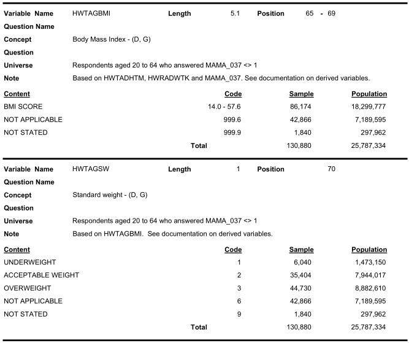
Therefore, we will not have BMI from anyone aged less than 20 or over 64.
table(c123sub2$bmicat, c123sub2$age)[,1:2]
#>
#> 12 TO 14 YEARS 15 TO 19 YEARS
#> UNDERWEIGHT 0 0
#> ACCEPT. WEIGHT 0 0
#> OVERWEIGHT 0 0
#> NOT APPLICABLE 19934 21891
#> NOT STATED 0 0
#> NORMAL WEIGHT 0 0
#> OBESE 0 0
#> DON'T KNOW 0 0
#> REFUSAL 0 0
# Note the categories of bmicat (duplicate categories) Also, we check the prevalence of OA and CVD for subjects less than 20 years of age: not a lot of people (still potential for a sensitivity analysis).
table(c123sub2$OA, c123sub2$age)
#>
#> 12 TO 14 YEARS 15 TO 19 YEARS 20 TO 24 YEARS 25 TO 29 YEARS
#> Control 19927 21795 21303 25490
#> OA 7 96 191 345
#>
#> 30 TO 34 YEARS 35 TO 39 YEARS 40 TO 44 YEARS 45 TO 49 YEARS
#> Control 28851 30359 30267 25302
#> OA 595 1027 1639 2482
#>
#> 50 TO 54 YEARS 55 TO 59 YEARS 60 TO 64 YEARS 65 TO 69 YEARS
#> Control 23670 20036 15751 13024
#> OA 3988 4991 5093 5257
#>
#> 70 TO 74 YEARS 75 TO 79 YEARS 80 YEARS OR MORE NOT APPLICABLE
#> Control 11011 8426 9127 0
#> OA 5236 4671 5227 0
#>
#> DON'T KNOW REFUSAL NOT STATED 15 TO 17 YEARS 18 TO 19 YEARS
#> Control 0 0 0 6084 3907
#> OA 0 0 0 8 15
table(c123sub2$CVD, c123sub2$age)
#>
#> 12 TO 14 YEARS 15 TO 19 YEARS 20 TO 24 YEARS 25 TO 29 YEARS
#> 0 event 19853 21776 21354 25670
#> event 81 115 140 165
#>
#> 30 TO 34 YEARS 35 TO 39 YEARS 40 TO 44 YEARS 45 TO 49 YEARS
#> 0 event 29237 31090 31378 27049
#> event 209 296 528 735
#>
#> 50 TO 54 YEARS 55 TO 59 YEARS 60 TO 64 YEARS 65 TO 69 YEARS
#> 0 event 26506 23290 18762 15789
#> event 1152 1737 2082 2492
#>
#> 70 TO 74 YEARS 75 TO 79 YEARS 80 YEARS OR MORE NOT APPLICABLE
#> 0 event 13375 10229 10703 0
#> event 2872 2868 3651 0
#>
#> DON'T KNOW REFUSAL NOT STATED 15 TO 17 YEARS 18 TO 19 YEARS
#> 0 event 0 0 0 6066 3894
#> event 0 0 0 26 28Accordingly, we will restrict our analysis (and aim) to adult target population only (age 20 and +). For that, first, recode the age variable, and then exclude the teen category.
# CCHS cycle 1.1 has: '15 TO 19 YEARS'
# Other cycles have: '15 TO 17 YEARS', '18 TO 19 YEARS'
c123sub2$age <- recode(c123sub2$age,
"c('12 TO 14 YEARS','15 TO 19 YEARS',
'15 TO 17 YEARS', '18 TO 19 YEARS')='teen';
c('20 TO 24 YEARS','25 TO 29 YEARS',
'30 TO 34 YEARS','35 TO 39 YEARS')='20-39 years';
c('40 TO 44 YEARS','45 TO 49 YEARS')='40-49 years';
c('50 TO 54 YEARS','55 TO 59 YEARS')='50-59 years';
c('60 TO 64 YEARS')='60-64 years';
else='65 years and over'",
as.factor = FALSE)
table(c123sub2$age)
#>
#> 20-39 years 40-49 years 50-59 years 60-64 years
#> 108161 59690 52685 20844
#> 65 years and over teen
#> 61979 51839
dim(c123sub2)
#> [1] 355198 17
c123sub3 <- subset(c123sub2, age != 'teen' &
age != '65 years and over')
table(c123sub3$age, useNA = "always")
#>
#> 20-39 years 40-49 years 50-59 years 60-64 years <NA>
#> 108161 59690 52685 20844 0
dim(c123sub3)
#> [1] 241380 17Criteria 4: Assign missing to the invalid covariate responses
We have invalid covariate responses, such as refused, not ascertained, and don’t know responses. Let’s assign missing values for these invalid responses.
# sex
table(c123sub3$sex)
#>
#> MALE FEMALE NOT APPLICABLE NOT STATED DON'T KNOW
#> 114104 127276 0 0 0
#> REFUSAL
#> 0
c123sub3$sex <- car::recode(c123sub3$sex,
"'MALE'='Male';
'FEMALE' = 'Female';
else = NA",
as.factor = FALSE)
table(c123sub3$sex, useNA = "always")
#>
#> Female Male <NA>
#> 127276 114104 0
# Race
table(c123sub3$race)
#>
#> WHITE VISIBLE MINORITY NOT APPLICABLE NOT STATED
#> 210307 25840 0 5233
#> DON'T KNOW REFUSAL
#> 0 0
c123sub3$race <- car::recode(c123sub3$race,
"'WHITE'='White';
'VISIBLE MINORITY' = 'Non-white';
else = NA",
as.factor = FALSE)
table(c123sub3$race, useNA = "always")
#>
#> Non-white White <NA>
#> 25840 210307 5233
# income
table(c123sub3$income)
#>
#> NO INCOME LESS THAN 15,000 $15,000-$29,999 $30,000-$49,999
#> 5953 6985 29888 49496
#> $50,000-$79,999 $80,000 OR MORE NOT APPLICABLE NOT STATED
#> 61093 57056 0 25730
#> DON'T KNOW REFUSAL NO OR <$15,000
#> 0 0 5179
# cycle 1.1 has: 'NO INCOME','LESS THAN 15,000'
# Other cycles have: 'NO OR <$15,000'
c123sub3$income <- car::recode(c123sub3$income,
"c('NO OR <$15,000', 'NO INCOME',
'LESS THAN 15,000',
'$15,000-$29,999')='$29,999 or less';
'$30,000-$49,999' = '$30,000-$49,999';
'$50,000-$79,999' = '$50,000-$79,999';
'$80,000 OR MORE' = '$80,000 or more';
else = NA",
as.factor = FALSE)
table(c123sub3$income, useNA = "always")
#>
#> $29,999 or less $30,000-$49,999 $50,000-$79,999 $80,000 or more <NA>
#> 48005 49496 61093 57056 25730
# BMI
table(c123sub3$bmicat)
#>
#> UNDERWEIGHT ACCEPT. WEIGHT OVERWEIGHT NOT APPLICABLE NOT STATED
#> 8964 33100 93107 1038 7577
#> NORMAL WEIGHT OBESE DON'T KNOW REFUSAL
#> 70278 27316 0 0
c123sub3$bmicat <- car::recode(c123sub3$bmicat,
"'UNDERWEIGHT'='Underweight';
c('ACCEPT. WEIGHT','NORMAL WEIGHT')='Normal';
c('OVERWEIGHT','OBESE') = 'Overweight';
else = NA",
as.factor = FALSE)
table(c123sub3$bmicat, useNA = "always")
#>
#> Normal Overweight Underweight <NA>
#> 103378 120423 8964 8615
c123sub3$bmi <- NULL # no need of the original BMI values
# physical activity
table(c123sub3$phyact)
#>
#> ACTIVE MODERATE INACTIVE NOT APPLICABLE NOT STATED
#> 57033 60164 117516 0 6667
#> DON'T KNOW REFUSAL
#> 0 0
c123sub3$phyact <- car::recode(c123sub3$phyact,
"'ACTIVE'='Active';
'MODERATE' = 'Moderate';
'INACTIVE' = 'Inactive';
else = NA",
as.factor = FALSE)
table(c123sub3$phyact, useNA = "always")
#>
#> Active Inactive Moderate <NA>
#> 57033 117516 60164 6667
# smoking
table(c123sub3$smoke)
#>
#> DAILY OCCASIONAL ALWAYS OCCASION. FORMER DAILY
#> 58747 8175 4399 59722
#> FORMER OCCASION. NEVER SMOKED NOT APPLICABLE NOT STATED
#> 38123 71397 0 817
#> DON'T KNOW REFUSAL
#> 0 0
c123sub3$smoke <- car::recode(c123sub3$smoke,
"c('DAILY','OCCASIONAL',
'ALWAYS OCCASION.')='Current smoker';
c('FORMER DAILY','FORMER OCCASION.',
'ALWAYS OCCASION.') = 'Former smoker';
'NEVER SMOKED' = 'Never smoker';
else = NA",
as.factor = FALSE)
table(c123sub3$smoke, useNA = "always")
#>
#> Current smoker Former smoker Never smoker <NA>
#> 71321 97845 71397 817
# fruit and vegetable consumption
str(c123sub3$fruit)
#> Factor w/ 303 levels "0","0.1","0.2",..: 42 67 39 61 51 51 48 41 17 27 ...
c123sub3$fruit.cont <- c123sub3$fruit
c123sub3$fruit2 <- as.numeric(as.character(c123sub3$fruit))
#> Warning: NAs introduced by coercion
# Note: do not use as.numeric(c123sub3$fruit)
summary(c123sub3$fruit2)
#> Min. 1st Qu. Median Mean 3rd Qu. Max. NA's
#> 0.00 2.90 4.10 4.63 5.90 64.30 42987
c123sub3$fruit2 <- cut(c123sub3$fruit2,
breaks = c(0,3,6,Inf),
right = TRUE,
labels = c("0-3 daily serving",
"4-6 daily serving",
"6+ daily serving"))
table(c123sub3$fruit2, useNA = "always")
#>
#> 0-3 daily serving 4-6 daily serving 6+ daily serving <NA>
#> 56256 96177 45861 43086
c123sub3$fruit <- c123sub3$fruit2
c123sub3$fruit2 <- NULL
# pain medication
table(c123sub3$painmed)
#>
#> YES NO NOT APPLICABLE DON'T KNOW REFUSAL
#> 25743 11141 204323 32 13
#> NOT STATED
#> 128
c123sub3$painmed <- car::recode(c123sub3$painmed,
"'YES'='Yes';
'NO' = 'No';
else = NA",
as.factor = FALSE)
table(c123sub3$painmed, useNA = "always")
#>
#> No Yes <NA>
#> 11141 25743 204496
# hypertension
table(c123sub3$ht)
#>
#> YES NO NOT APPLICABLE DON'T KNOW REFUSAL
#> 27592 213432 0 331 25
#> NOT STATED
#> 0
c123sub3$ht <- car::recode(c123sub3$ht,
"'YES'='Yes';
'NO' = 'No';
else = NA",
as.factor = FALSE)
table(c123sub3$ht, useNA = "always")
#>
#> No Yes <NA>
#> 213432 27592 356
# COPD
table(c123sub3$copd)
#>
#> YES NO NOT APPLICABLE DON'T KNOW REFUSAL
#> 1353 192608 47329 70 0
#> NOT STATED
#> 20
c123sub3$copd <- car::recode(c123sub3$copd,
"'YES'='Yes';
'NO' = 'No';
else = NA",
as.factor = FALSE)
table(c123sub3$copd, useNA = "always")
#>
#> No Yes <NA>
#> 192608 1353 47419
# Diabetes
table(c123sub3$diab)
#>
#> YES NO NOT APPLICABLE DON'T KNOW REFUSAL
#> 8811 232486 0 81 2
#> NOT STATED
#> 0
c123sub3$diab <- car::recode(c123sub3$diab,
"'YES'='Yes';
'NO' = 'No';
else = NA",
as.factor = FALSE)
table(c123sub3$diab, useNA = "always")
#>
#> No Yes <NA>
#> 232486 8811 83
# Education
table(c123sub3$edu)
#>
#> < THAN SECONDARY SECONDARY GRAD. OTHER POST-SEC. POST-SEC. GRAD.
#> 37775 44376 19273 136031
#> NOT APPLICABLE NOT STATED DON'T KNOW REFUSAL
#> 0 3925 0 0
c123sub3$edu <- car::recode(c123sub3$edu,
"'< THAN SECONDARY'='< 2ndary';
'SECONDARY GRAD.' = '2nd grad.';
'POST-SEC. GRAD.' = 'Post-2nd grad.';
'OTHER POST-SEC.' = 'Other 2nd grad.';
else = NA",
as.factor = FALSE)
table(c123sub3$edu, useNA = "always")
#>
#> < 2ndary 2nd grad. Other 2nd grad. Post-2nd grad. <NA>
#> 37775 44376 19273 136031 3925Naive Analysis of combined 3 cycles
In the current analysis, we will simply consider all of the variables under consideration as ‘confounders’, and include in our analysis. Later we will perform a refined analysis.
Summary of the analytic data
Including missing values
dim(c123sub3)
#> [1] 241380 17
analytic <- c123sub3
dim(analytic)
#> [1] 241380 17
require("tableone")
CreateTableOne(vars = c("CVD", "age",
"sex", "income", "race",
"bmicat", "phyact", "smoke", "fruit",
"painmed", "ht", "copd", "diab", "edu"),
data = analytic, includeNA = TRUE)
#>
#> Overall
#> n 241380
#> CVD = event (%) 7044 ( 2.9)
#> age (%)
#> 20-39 years 108161 (44.8)
#> 40-49 years 59690 (24.7)
#> 50-59 years 52685 (21.8)
#> 60-64 years 20844 ( 8.6)
#> sex = Male (%) 114104 (47.3)
#> income (%)
#> $29,999 or less 48005 (19.9)
#> $30,000-$49,999 49496 (20.5)
#> $50,000-$79,999 61093 (25.3)
#> $80,000 or more 57056 (23.6)
#> NA 25730 (10.7)
#> race (%)
#> Non-white 25840 (10.7)
#> White 210307 (87.1)
#> NA 5233 ( 2.2)
#> bmicat (%)
#> Normal 103378 (42.8)
#> Overweight 120423 (49.9)
#> Underweight 8964 ( 3.7)
#> NA 8615 ( 3.6)
#> phyact (%)
#> Active 57033 (23.6)
#> Inactive 117516 (48.7)
#> Moderate 60164 (24.9)
#> NA 6667 ( 2.8)
#> smoke (%)
#> Current smoker 71321 (29.5)
#> Former smoker 97845 (40.5)
#> Never smoker 71397 (29.6)
#> NA 817 ( 0.3)
#> fruit (%)
#> 0-3 daily serving 56256 (23.3)
#> 4-6 daily serving 96177 (39.8)
#> 6+ daily serving 45861 (19.0)
#> NA 43086 (17.8)
#> painmed (%)
#> No 11141 ( 4.6)
#> Yes 25743 (10.7)
#> NA 204496 (84.7)
#> ht (%)
#> No 213432 (88.4)
#> Yes 27592 (11.4)
#> NA 356 ( 0.1)
#> copd (%)
#> No 192608 (79.8)
#> Yes 1353 ( 0.6)
#> NA 47419 (19.6)
#> diab (%)
#> No 232486 (96.3)
#> Yes 8811 ( 3.7)
#> NA 83 ( 0.0)
#> edu (%)
#> < 2ndary 37775 (15.6)
#> 2nd grad. 44376 (18.4)
#> Other 2nd grad. 19273 ( 8.0)
#> Post-2nd grad. 136031 (56.4)
#> NA 3925 ( 1.6)
CreateTableOne(vars = c("CVD", "age",
"sex", "income", "race",
"bmicat", "phyact", "smoke", "fruit",
"painmed", "ht", "copd", "diab", "edu"),
data = analytic, strata = "OA", includeNA = TRUE)
#> Stratified by OA
#> Control OA p test
#> n 221029 20351
#> CVD = event (%) 5429 ( 2.5) 1615 ( 7.9) <0.001
#> age (%) <0.001
#> 20-39 years 106003 (48.0) 2158 (10.6)
#> 40-49 years 55569 (25.1) 4121 (20.2)
#> 50-59 years 43706 (19.8) 8979 (44.1)
#> 60-64 years 15751 ( 7.1) 5093 (25.0)
#> sex = Male (%) 107729 (48.7) 6375 (31.3) <0.001
#> income (%) <0.001
#> $29,999 or less 42019 (19.0) 5986 (29.4)
#> $30,000-$49,999 45090 (20.4) 4406 (21.7)
#> $50,000-$79,999 56754 (25.7) 4339 (21.3)
#> $80,000 or more 53637 (24.3) 3419 (16.8)
#> NA 23529 (10.6) 2201 (10.8)
#> race (%) <0.001
#> Non-white 24681 (11.2) 1159 ( 5.7)
#> White 191513 (86.6) 18794 (92.3)
#> NA 4835 ( 2.2) 398 ( 2.0)
#> bmicat (%) <0.001
#> Normal 96697 (43.7) 6681 (32.8)
#> Overweight 107871 (48.8) 12552 (61.7)
#> Underweight 8490 ( 3.8) 474 ( 2.3)
#> NA 7971 ( 3.6) 644 ( 3.2)
#> phyact (%) <0.001
#> Active 52942 (24.0) 4091 (20.1)
#> Inactive 106580 (48.2) 10936 (53.7)
#> Moderate 55222 (25.0) 4942 (24.3)
#> NA 6285 ( 2.8) 382 ( 1.9)
#> smoke (%) <0.001
#> Current smoker 65398 (29.6) 5923 (29.1)
#> Former smoker 88210 (39.9) 9635 (47.3)
#> Never smoker 66663 (30.2) 4734 (23.3)
#> NA 758 ( 0.3) 59 ( 0.3)
#> fruit (%) <0.001
#> 0-3 daily serving 52140 (23.6) 4116 (20.2)
#> 4-6 daily serving 87951 (39.8) 8226 (40.4)
#> 6+ daily serving 41606 (18.8) 4255 (20.9)
#> NA 39332 (17.8) 3754 (18.4)
#> painmed (%) <0.001
#> No 10624 ( 4.8) 517 ( 2.5)
#> Yes 23084 (10.4) 2659 (13.1)
#> NA 187321 (84.7) 17175 (84.4)
#> ht (%) <0.001
#> No 198550 (89.8) 14882 (73.1)
#> Yes 22142 (10.0) 5450 (26.8)
#> NA 337 ( 0.2) 19 ( 0.1)
#> copd (%) <0.001
#> No 173224 (78.4) 19384 (95.2)
#> Yes 938 ( 0.4) 415 ( 2.0)
#> NA 46867 (21.2) 552 ( 2.7)
#> diab (%) <0.001
#> No 213910 (96.8) 18576 (91.3)
#> Yes 7046 ( 3.2) 1765 ( 8.7)
#> NA 73 ( 0.0) 10 ( 0.0)
#> edu (%) <0.001
#> < 2ndary 32884 (14.9) 4891 (24.0)
#> 2nd grad. 40950 (18.5) 3426 (16.8)
#> Other 2nd grad. 17808 ( 8.1) 1465 ( 7.2)
#> Post-2nd grad. 125772 (56.9) 10259 (50.4)
#> NA 3615 ( 1.6) 310 ( 1.5)
require(DataExplorer)
plot_missing(analytic)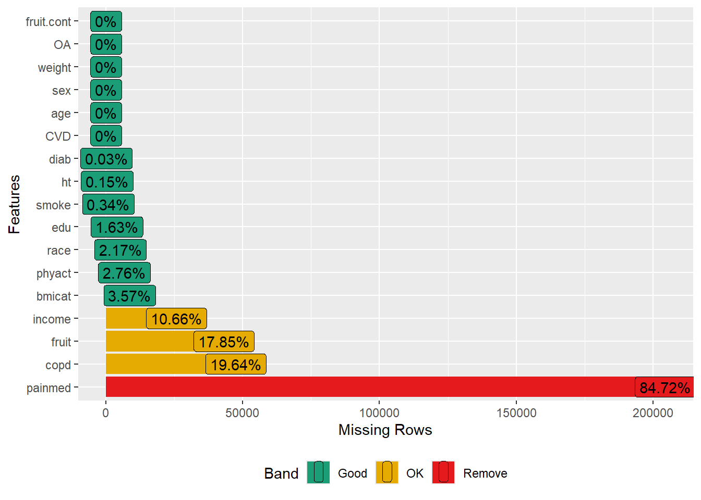
Let us investigate why pain medication has so much missing
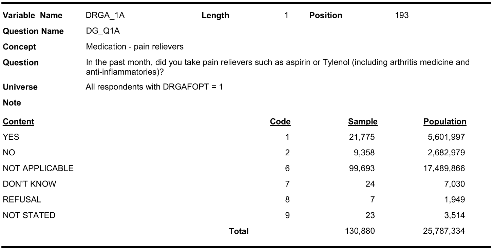
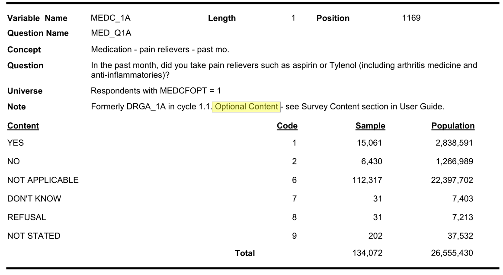
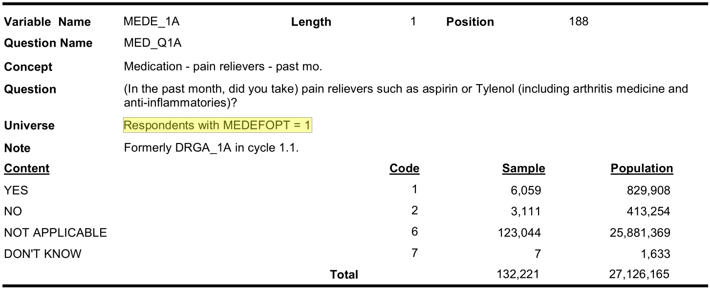
Optional content respondent (cycle 3.1):
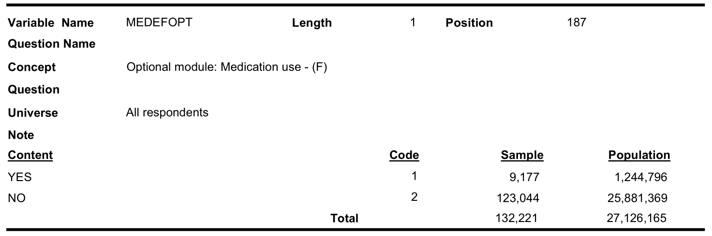
In cycle 2.1, only 21,755 out of 134,072 responded to optional medication component.
Complete case analysis
dim(c123sub3)
#> [1] 241380 17
analytic2 <- as.data.frame(na.omit(c123sub3))
dim(analytic2)
#> [1] 21623 17
tab1 <- CreateTableOne(vars = c("CVD", "age",
"sex", "income", "race",
"bmicat", "phyact", "smoke", "fruit",
"painmed", "ht", "copd", "diab", "edu"),
data = analytic2, includeNA = TRUE)
print(tab1, showAllLevels = TRUE)
#>
#> level Overall
#> n 21623
#> CVD (%) 0 event 20917 (96.7)
#> event 706 ( 3.3)
#> age (%) 20-39 years 7119 (32.9)
#> 40-49 years 7024 (32.5)
#> 50-59 years 5457 (25.2)
#> 60-64 years 2023 ( 9.4)
#> sex (%) Female 10982 (50.8)
#> Male 10641 (49.2)
#> income (%) $29,999 or less 4054 (18.7)
#> $30,000-$49,999 4461 (20.6)
#> $50,000-$79,999 6600 (30.5)
#> $80,000 or more 6508 (30.1)
#> race (%) Non-white 2488 (11.5)
#> White 19135 (88.5)
#> bmicat (%) Normal 8993 (41.6)
#> Overweight 11739 (54.3)
#> Underweight 891 ( 4.1)
#> phyact (%) Active 5502 (25.4)
#> Inactive 10495 (48.5)
#> Moderate 5626 (26.0)
#> smoke (%) Current smoker 5887 (27.2)
#> Former smoker 9368 (43.3)
#> Never smoker 6368 (29.5)
#> fruit (%) 0-3 daily serving 5806 (26.9)
#> 4-6 daily serving 10730 (49.6)
#> 6+ daily serving 5087 (23.5)
#> painmed (%) No 6197 (28.7)
#> Yes 15426 (71.3)
#> ht (%) No 19014 (87.9)
#> Yes 2609 (12.1)
#> copd (%) No 21475 (99.3)
#> Yes 148 ( 0.7)
#> diab (%) No 20760 (96.0)
#> Yes 863 ( 4.0)
#> edu (%) < 2ndary 2998 (13.9)
#> 2nd grad. 4605 (21.3)
#> Other 2nd grad. 1509 ( 7.0)
#> Post-2nd grad. 12511 (57.9)
tab1b <- CreateTableOne(vars = c("CVD", "age",
"sex", "income", "race",
"bmicat", "phyact", "smoke", "fruit",
"painmed", "ht", "copd", "diab", "edu"),
data = analytic2, strata = "OA", includeNA = TRUE)
print(tab1b, showAllLevels = TRUE)
#> Stratified by OA
#> level Control OA p test
#> n 19459 2164
#> CVD (%) 0 event 18917 (97.2) 2000 (92.4) <0.001
#> event 542 ( 2.8) 164 ( 7.6)
#> age (%) 20-39 years 6915 (35.5) 204 ( 9.4) <0.001
#> 40-49 years 6515 (33.5) 509 (23.5)
#> 50-59 years 4504 (23.1) 953 (44.0)
#> 60-64 years 1525 ( 7.8) 498 (23.0)
#> sex (%) Female 9521 (48.9) 1461 (67.5) <0.001
#> Male 9938 (51.1) 703 (32.5)
#> income (%) $29,999 or less 3413 (17.5) 641 (29.6) <0.001
#> $30,000-$49,999 3968 (20.4) 493 (22.8)
#> $50,000-$79,999 6023 (31.0) 577 (26.7)
#> $80,000 or more 6055 (31.1) 453 (20.9)
#> race (%) Non-white 2370 (12.2) 118 ( 5.5) <0.001
#> White 17089 (87.8) 2046 (94.5)
#> bmicat (%) Normal 8277 (42.5) 716 (33.1) <0.001
#> Overweight 10356 (53.2) 1383 (63.9)
#> Underweight 826 ( 4.2) 65 ( 3.0)
#> phyact (%) Active 4986 (25.6) 516 (23.8) 0.190
#> Inactive 9417 (48.4) 1078 (49.8)
#> Moderate 5056 (26.0) 570 (26.3)
#> smoke (%) Current smoker 5247 (27.0) 640 (29.6) <0.001
#> Former smoker 8363 (43.0) 1005 (46.4)
#> Never smoker 5849 (30.1) 519 (24.0)
#> fruit (%) 0-3 daily serving 5290 (27.2) 516 (23.8) <0.001
#> 4-6 daily serving 9686 (49.8) 1044 (48.2)
#> 6+ daily serving 4483 (23.0) 604 (27.9)
#> painmed (%) No 5859 (30.1) 338 (15.6) <0.001
#> Yes 13600 (69.9) 1826 (84.4)
#> ht (%) No 17356 (89.2) 1658 (76.6) <0.001
#> Yes 2103 (10.8) 506 (23.4)
#> copd (%) No 19359 (99.5) 2116 (97.8) <0.001
#> Yes 100 ( 0.5) 48 ( 2.2)
#> diab (%) No 18751 (96.4) 2009 (92.8) <0.001
#> Yes 708 ( 3.6) 155 ( 7.2)
#> edu (%) < 2ndary 2527 (13.0) 471 (21.8) <0.001
#> 2nd grad. 4173 (21.4) 432 (20.0)
#> Other 2nd grad. 1364 ( 7.0) 145 ( 6.7)
#> Post-2nd grad. 11395 (58.6) 1116 (51.6)Save data for later
References
Rahman, M Mushfiqur, Jacek A Kopec, Jolanda Cibere, Charlie H Goldsmith, and Aslam H Anis. 2013. “The Relationship Between Osteoarthritis and Cardiovascular Disease in a Population Health Survey: A Cross-Sectional Study.” BMJ Open 3 (5): e002624.